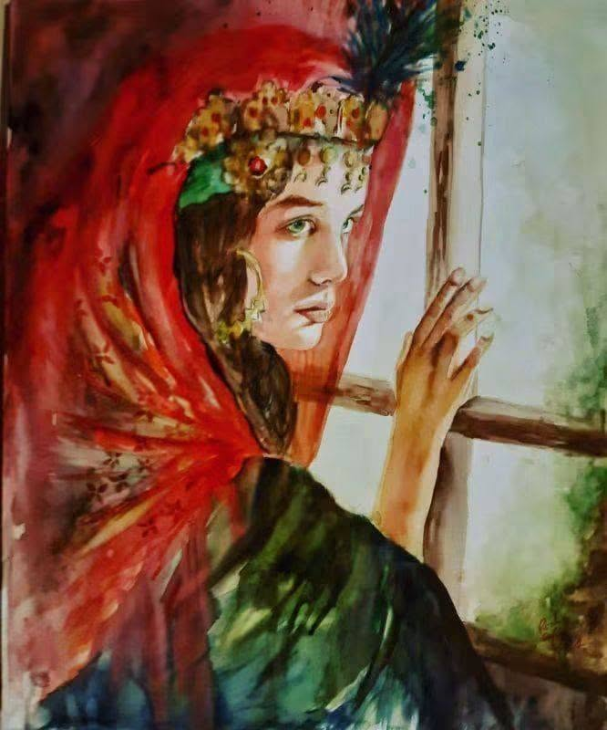

Fatna, sous la lune de Ben Kerriou
À Laghouat,
quand le soir descend
sur les pierres chaudes
et les palmiers,
il reste parfois,
dans le silence,
un prénom
que le désert
refuse d’oublier.
Fatna.
Un prénom
porté par le vent,
une femme
devenue légende,
une lumière aperçue
derrière les voiles du temps,
et qu’aucune nuit
n’a jamais réussi à éteindre.
Ben Kerriou
l’avait peut-être aimée
comme on aime
une source
au milieu du désert :
avec la soif,
avec la peur,
avec cette certitude étrange
que l’eau la plus précieuse
est souvent celle
qu’on ne peut atteindre.
Les familles
avaient dressé
leurs murs,
les coutumes
leurs frontières,
les hommes
leurs interdits.
Alors le poète
n’eut pour refuge
que la parole.
Et dans sa parole,
Fatna ne fut plus
seulement Fatna.
Elle devint une lune.
Une lune immense
au-dessus des ksour,
une clarté suspendue
aux nuits sahariennes,
un visage
que les nuages
pouvaient cacher
mais jamais arracher
à la mémoire.
Il lui parla dans ses veillées,
quand la ville dormait
et que les étoiles
semblaient écouter.
Il confia son chagrin
à la poussière des chemins,
aux chevaux fatigués,
aux palmes immobiles,
aux montagnes silencieuses.
Puis vint l’exil.
El-Goléa
accueillit ses pas,
mais pas son cœur.
Car on peut quitter une ville,
traverser les étendues,
changer d’horizon,
mais comment fuir
une femme
devenue paysage ?
Chaque nuit,
la lune revenait.
Et dans sa lumière,
le poète retrouvait
les yeux de Fatna.
Alors il comprit peut-être
que l’amour impossible
possède une étrange victoire :
on peut lui interdire
les maisons,
les rencontres,
les chemins,
mais pas les poèmes.
Ainsi Fatna entra
dans l’éternité.
Non pas par une porte,
mais par un vers.
Non pas comme une femme
que le temps aurait pu vieillir,
mais comme une lumière
que le temps embellit.
Aujourd’hui encore,
quand une voix chante Gamr Elleïl,
quelque chose bouge dans le désert.
La lune monte au-dessus de Laghouat.
Les vieux murs semblent se souvenir.
Le vent ralentit entre les palmes.
Et quelque part,
dans cette immense mémoire
de sable,
un poète regarde
encore le ciel
à la recherche
d’un visage.
Fatna.
La femme
qu’il ne put rejoindre,
mais que ses vers
ne quittèrent jamais.
Et peut-être est-ce cela,
la véritable victoire
de l’amour :
être séparé
de l’être aimé
par les hommes,
par les familles,
par le destin,
et pourtant,
se retrouver chaque nuit
dans la lumière d’une lune
que personne ne peut interdire.
Djamel Metref
At Yenni le 21 Août 2026
lien d`inspiration
https://www.facebook.com/share/p/1FNDTr7Qps/
Fatna la muse du poète
the image is Œuvre de © Reche Safia
← Tous les poèmes
Fatna, sous la lune de Ben Kerriou
Amour et désir · Mémoire et transmission · Écriture et poésie